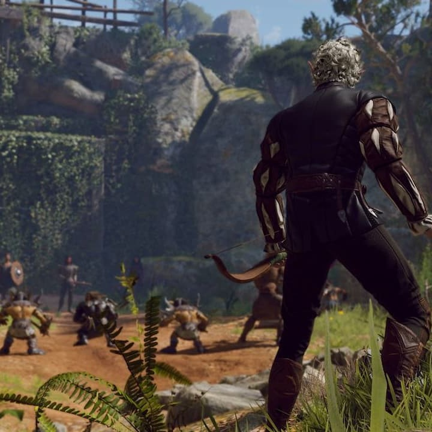
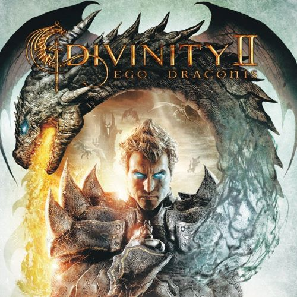
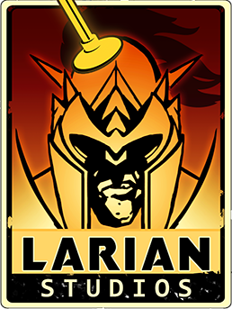
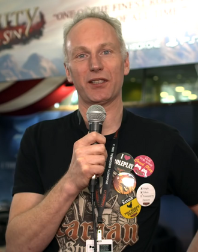

O protagonista acorda dentro de um enorme navio voador illithid (mind flayer) que atravessa dimensões. Ele está implantado com um girino illithid, um parasita que domina e transforma as pessoas em illithids; no entanto, a transformação não ocorre, e o navio é atacado por guerreiros githyanki.

Divine Divinity
Beyond Divinity
Divinity II: Ego Draconis
Divinity II: Flames of Vengeance
Divinity: Dragon Commander
Divinity: Original Sin
Divinity: Original Sin II

A Larian Studios é uma desenvolvedora e editora independente de jogos de vídeo belga, fundada em 1996 por Swen Vincke. Com sede em Gante, Bélgica, a Larian concentra-se no desenvolvimento de jogos de vídeo de interpretação de personagens, mas já trabalhou anteriormente em jogos educacionais e de cassino.

Swen Johan Vincke, nascido em 30 de maio de 1972, é um designer, programador e diretor belga de jogos de vídeo. Ele é o fundador e CEO da empresa de videogames Larian Studios, onde liderou o desenvolvimento da série Divinity e de Baldur's Gate 3.